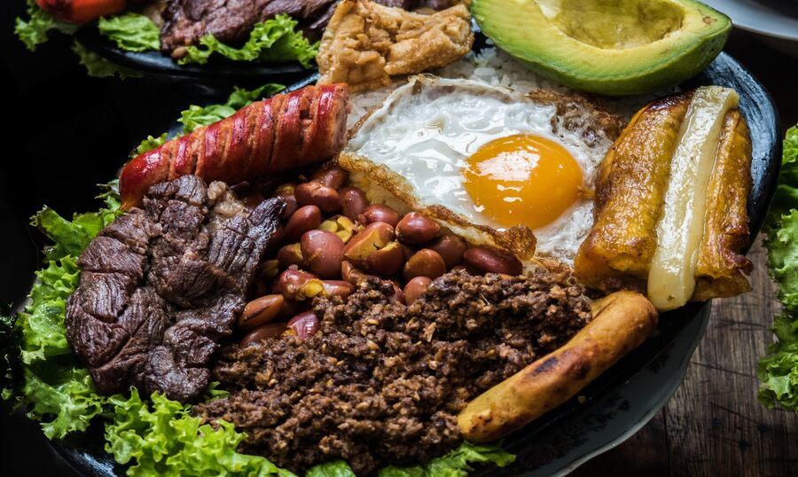

Viajes Culinarios
¡Bienvenidos a un recorrido gastronómico por tres destinos fascinantes!
Costa Rica, Colombia y Francia nos invitan a explorar sus sabores únicos y tradiciones culinarias que cautivan los sentidos. Desde la frescura tropical de la "pura vida" costarricense hasta la explosión de sabores de la cocina colombiana, y la sofisticación de la alta cocina francesa, este viaje nos sumergirá en una experiencia culinaria inolvidable.
¡Acompáñennos en este viaje culinario y descubran la magia que se encuentra en cada bocado!
Imagen del País
Colombia
Colombia es un país situado en América del Sur, conocido por su diversidad cultural y su cocina vibrante y sabrosa.
Ingredientes Destacados
Los ingredientes destacados en la cocina colombiana incluyen plátano, yuca, maíz, arroz, frijoles, cilantro, ají, coco, mango, maracuyá, entre otros.
Video
Tradiciones Culinarias
La cocina colombiana se caracteriza por su variedad y colorido. Algunas de las tradiciones culinarias incluyen la preparación de platos como la bandeja paisa, el ajiaco, la arepa, el sancocho, la lechona, el patacón, entre otros.
Imagen de los Platillos
PDF de Recetas
Restaurantes en Google Maps
Restaurante el Cielo
Es conocido por su enfoque en la gastronomía molecular y su innovadora propuesta culinaria.
cuenta con varios reconocimientos internacionales y ha sido galardonado con estrellas Michelin.
Restaurante La puerta Falsa
La Puerta Falsa es uno de los restaurantes más antiguos de Colombia, con más de 200 años de historia.
es un lugar emblemático que ha sido testigo de importantes acontecimientos históricos en
Colombia.
La Vitrola Cuchoteka
La Vitrola Cuchoteka es un lugar especial ubicado en Colombia, donde puedes pasar una noche
inolvidable en un ambiente familiar.
se brinda seguridad a la entrada para garantizar una experiencia agradable y segura.